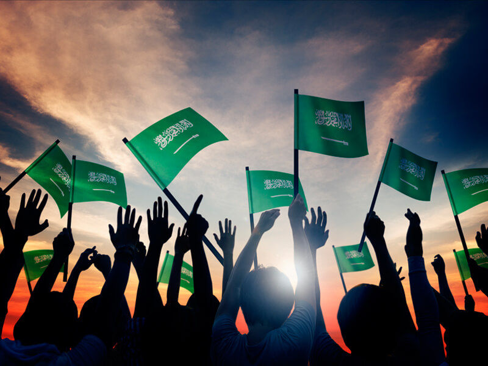
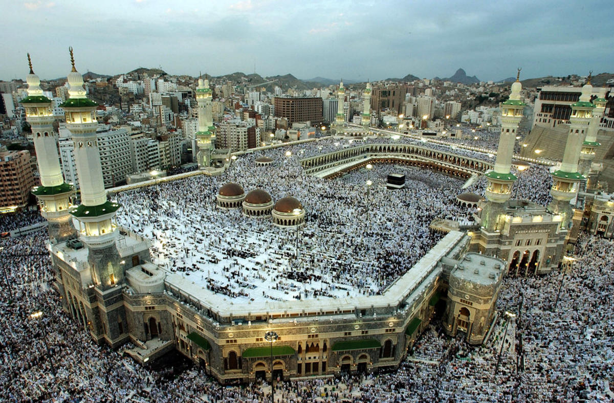
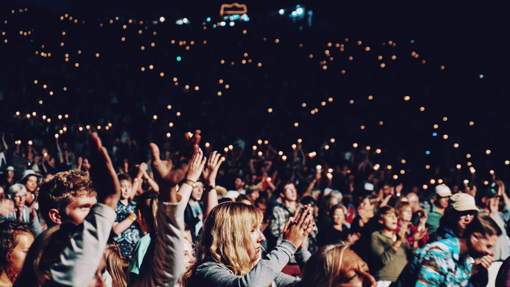
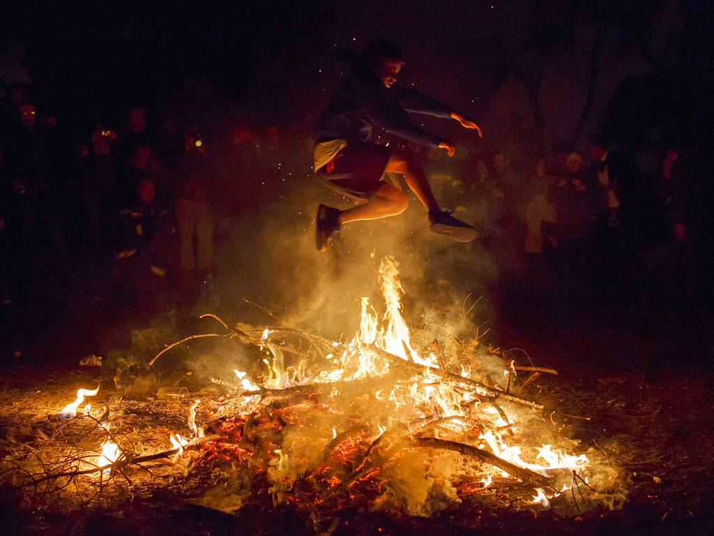

23 September
This is the country’s only public secular holiday and it takes place on the anniversary of the day Saudi Arabia was founded in the year 1932. There have been a growing number of young Saudis who choose to express their national pride more overtly through singing and dancing in public and by honking their car horns and driving around while waving Saudi flags.
9-10 November
This festival is celebrated on the occasion of the birthday of the Prophet Mohammad. Children are encouraged to recite poems about the Prophet and older generations tell stories about Mohammad’s life and his achievements. Additional traditional activities include large feasts and street processions. The date of the festival varies from year to year due to its accordance with the Islamic (lunar) calendar.
29 May to 15 June
This festival was first introduced to the international audience in the year 1961. Since then, each year the grounds display various forms of art. The performances range from stage art, theatre, classical music, and contemporary dance. The festival spans over a few days, taking place during the spring season.
September
It is based on an event from the Bible and a part of the three festivals where the people are commanded to visit the pilgrimage sites. It is named after the booths or huts (sukkot in Hebrew) in which Jews are supposed to dwell during this week-long celebration. According to rabbinic tradition, these flimsy sukkot represent the huts in which the Israelites dwelt during their 40 years of wandering in the desert after escaping from slavery in Egypt.
March 13 to March 20
The term Chaharshanbe Suri is made of two words meaning Wednesday and celebrations/red respectively, where young and old gather around and jump over fires that stay burning all night. Literally, friends and family gather in different parts of the world and build small bonfires These bonfires symbolize kindness, friendship, and light.